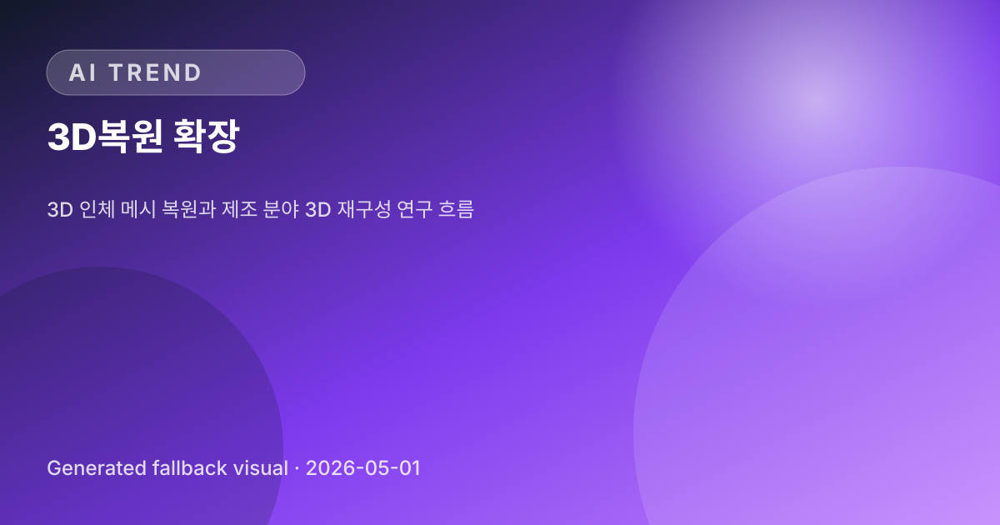

01

Enterprise · 2 sources
AWS 에이전트
두 글은 AWS가 생성형 AI 에이전트를 단순 챗봇이 아니라 기업 내부 시스템과 데이터 분석 워크플로에 연결되는 운영 인프라로 확장하고 있음을 보여준다. 특히 보안 네트워크 연결, 데이터 접근, BI 자동화가 함께 강조되며 엔터프라이즈 AI 도입의 병목인 권한·연결·분석 전문성 문제를 …
AWS는 Bedrock AgentCore와 SageMaker 생태계를 통해 기업용 에이전트 AI의 실제 운영 시나리오를 강화하고 있다. 핵심은 프라이빗 리소스에 대한 안전한 연결과 Athena·QuickSight 기반의 자연어 분석 자동화로, 에이전트 AI를 내부 업무와 데이터 의사결정에 직접 연결하는 흐름이다. LLM 개발의 초점이 성능 확장만이 아니라 정렬, 해석 가능성, 행동 검증으로 이동하고 있다.
두 글은 AWS가 생성형 AI 에이전트를 단순 챗봇이 아니라 기업 내부 시스템과 데이터 분석 워크플로에 연결되는 운영 인프라로 확장하고 있음을 보여준다. 특히 보안 네트워크 연결, 데이터 접근, BI 자동화가 함께 강조되며 엔터프라이즈 AI 도입의 병목인 권한·연결·분석 전문성 문제를 …

세 자료는 모두 LLM을 단순 생성 모델에서 통제·검증 가능한 시스템으로 전환하려는 흐름을 보여준다. RFT와 LLM judge는 외부 평가 신호를 통한 정렬을, Silico는 내부 메커니즘 조정을, 페르소나 연구는 프롬프트 기반 시뮬레이션의 한계를 드러내며 향후 모델 신뢰성 확보에는 …

AI 도입이 실험 단계를 넘어 핵심 업무와 공공 인프라로 확산되면서 비용 통제, 데이터 안보, 규제 균형이 주요 경영·정책 과제로 부상하고 있다. 특히 중국 AI 모델 사용 조사와 EU 규제 갈등은 AI 공급망과 모델 선택이 기술 문제가 아니라 지정학·규제 리스크로 연결되고 있음을 보여…
최근 AI 개발 도구 업데이트는 모델 실행 자체보다 에이전트·코딩 도구·로컬 추론 인프라의 사용성을 높이는 방향으로 진행되고 있다. 특히 Anthropic 호환 게이트웨이, MCP 기반 브라우저 자동화, CUDA/ROCm 병행 구성은 개발자가 다양한 모델과 하드웨어를 유연하게 연결하려는…
최근 업데이트는 IDE와 터미널 기반 코딩 에이전트가 단순 코드 보조를 넘어 목표 기반 작업 지속, 상태 관리, 권한·제어 흐름을 강화하는 방향으로 진화하고 있음을 시사한다.

공식 벤치마크가 아닌 커뮤니티 실험이지만, Qwen 3.6 27B·35B가 약 30B급 로컬 모델 시장에서 코딩·에이전트·장문맥 용도로 강한 선호를 얻고 있음을 시사한다. 특히 긴 컨텍스트와 실사용 속도를 동시에 확보하려는 수요가 커지면서, 기존 Qwen Coder 30B, Gemma …

두 논문은 3D 재구성 연구가 일반적인 시각 복원 성능 개선을 넘어, 포용적 인체 모델링과 산업 제조 현장 적용처럼 구체적이고 실용적인 도메인으로 확장되고 있음을 보여준다. 특히 신체 다양성을 반영하는 모델링과 제조 공정의 디지털화는 향후 AR/VR, 재활, 품질 검사, 디지털 트윈 등…

OpenAI는 일반 소비자용 AI 서비스에서도 피싱·계정 탈취 대응을 강화하는 동시에, 공격적 오용 가능성이 큰 사이버보안 모델은 선별 접근 방식으로 통제하려는 전략을 취하고 있다. 이는 Anthropic의 제한 배포를 비판했던 입장과 달리, 고위험 AI 기능에서는 업계 전반이 접근 제…

이번 증언은 모델 증류가 중국 AI 기업만의 문제가 아니라 미국 주요 AI 랩 간 경쟁에서도 활용될 수 있음을 드러낸 사례다. OpenAI와 Anthropic이 제3자의 증류 학습에 강경한 태도를 보이는 가운데, 업계 전반의 데이터 사용 기준과 API 약관 집행이 더 큰 쟁점으로 부상할…

Gemini의 차량 탑재는 생성형 AI가 스마트폰·웹을 넘어 자동차 인포테인먼트와 차량 제어 인터페이스로 확장되는 흐름을 보여준다. 자연어 대화, 차량별 정보 조회, 설정 변경 등이 강화되면서 차량 내 음성 UX 경쟁이 본격화될 가능성이 크다.